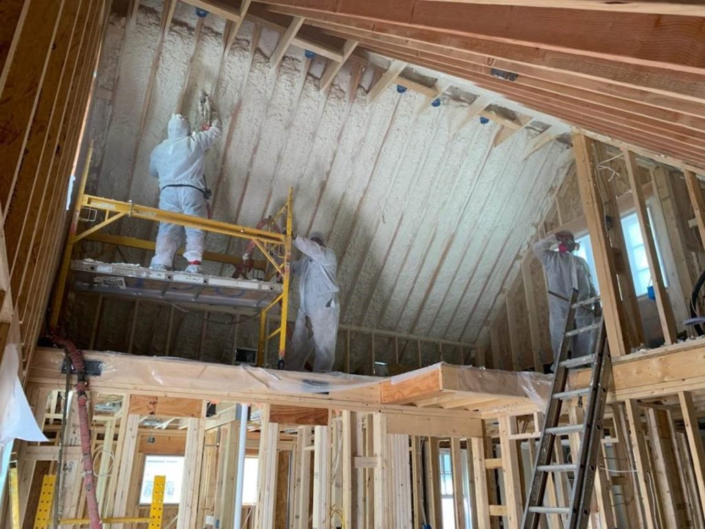
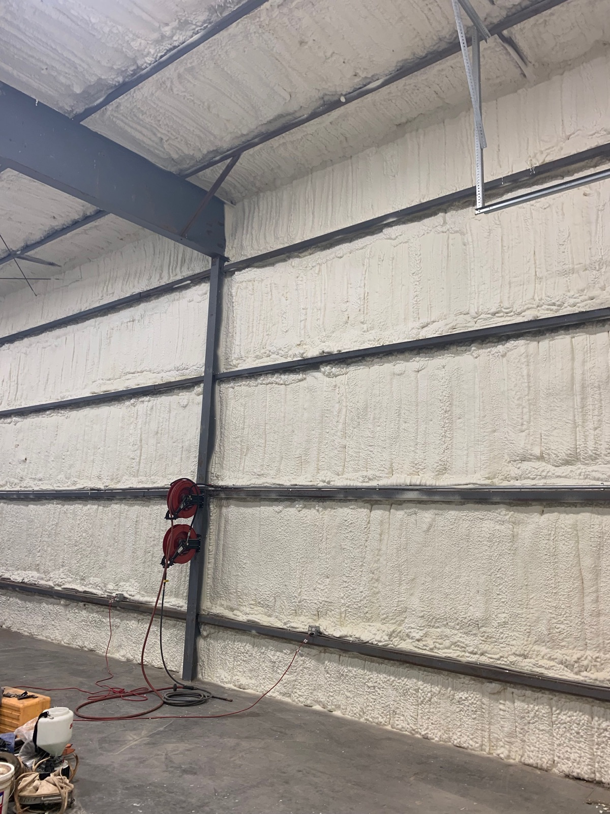
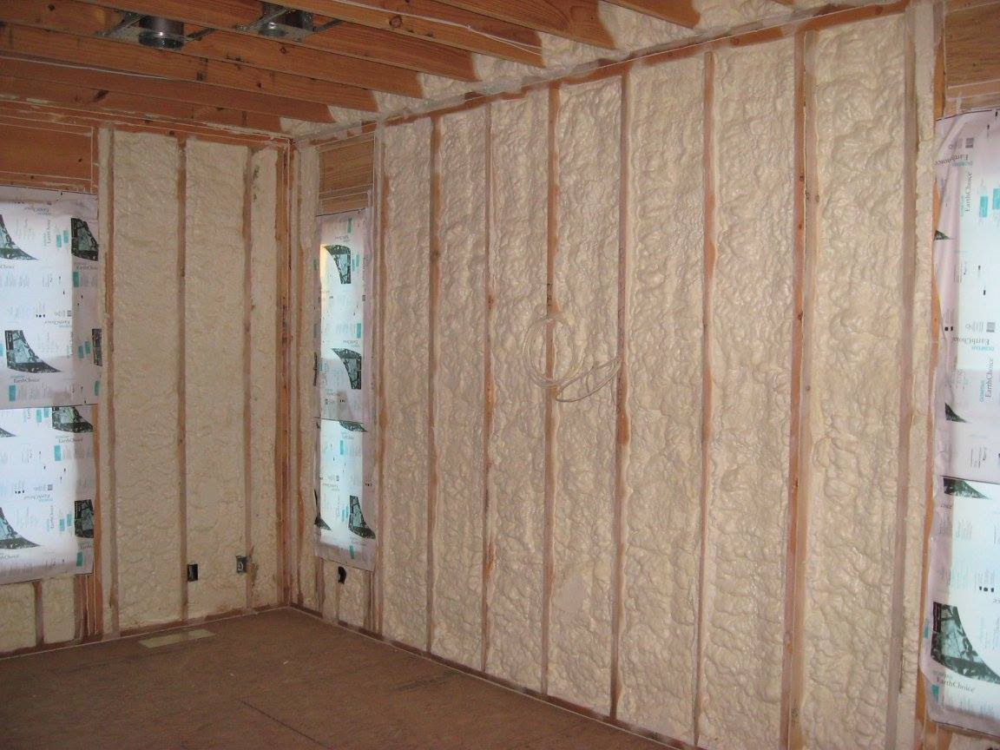
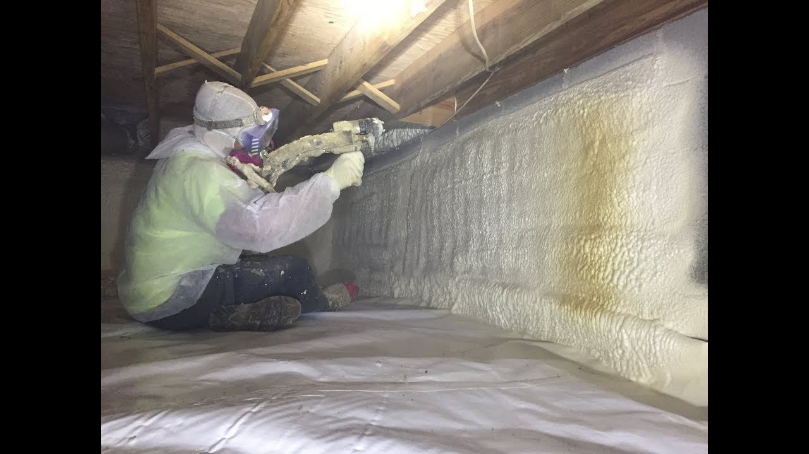

SPRAY FOAM INSULATION · GREER, SC
Insulation for
the way you build.
A home. A renovation. A commercial project.
Start with the building. Josh will help work out the insulation.
Plans, photos or a few words are enough to begin.

No foam or thickness selections.
Bring the project. Josh brings the guidance.
01 / FIND YOUR STARTING POINT
Different buildings.
The same thoughtful start.
Choose the path that fits your project.
You can send what you already have.

COMMERCIALFor the project team.
Drawings, specifications, scope and bid deadlines.

RESIDENTIALFor the place you call home.
New construction, renovations and existing spaces.

AIR SEALING & ENCAPSULATION
There’s more to the building than the rooms you see.
Show Josh the crawlspace, drafts or moisture concerns you want to discuss.
Photographs from Blue Star’s existing website. Applications shown are a starting point for discussing your building.
02 / A CLEAR NEXT STEP
You show us the project.
We help make sense of it.
You don’t have to arrive with an insulation specification. Start with the information you have.
Send plans or project details- 01
Send what you have.
Plans, photos, a rough surface area or a short description. Include the location and how to reach you.
- 02
Josh reviews the details.
The likely insulation surfaces, project requirements and information needed to move forward.
- 03
Agree on the next step.
Clarify the scope, discuss an estimate, arrange a site visit or work toward a written proposal.
03 / AN IMPORTANT DISTINCTION
Think walls.
Think roof surfaces.
Foam is applied to surfaces. A 2,000 sq ft building can have a very different amount of wall and roof area to insulate.
If you know the area of the surfaces, share it. If you only know the floor area, say so. If you’re unsure, send the plans or leave the number blank.
Let Josh review what you have ↗FOR BUILDERS, OWNERS & PROJECT TEAMS
A serious project
deserves a clear scope.
Send your current package. Josh can review what Blue Star is being asked to price and the questions that need answering first.
Commercial project guideYOUR PACKAGE IS THE START
Do I need to choose open-cell or closed-cell foam?
No. Share your building and your goal. Josh considers the assembly, available depth, moisture conditions and any project requirements before recommending an approach.
What if I don’t have drawings or measurements?
Start with a short description and your project location. Photos can help, but you can begin without them. Josh will explain what information is useful next.
Will I receive an instant price?
No. Plans begin the review. Josh checks the scope and missing details before discussing a useful estimate, arranging a site visit or preparing a written proposal. Uploading files does not reserve a date.
Which square footage should I send?
If you know it, send the combined area of the surfaces you want insulated—such as walls and a roof deck or ceiling. Building floor area is different. If your number is floor area, label it that way; if you are unsure, leave the area blank.
Where does Blue Star work?
Blue Star is based in Greer, South Carolina. Its published service area includes South Carolina, North Carolina, Georgia and Tennessee. Send the project location so travel, coverage and availability can be confirmed.
A GOOD PLACE TO START
Bring the project.
We’ll bring the guidance.
Plans, photos, a rough surface area, or simply a description. You do not need to choose a foam product.
Send your project